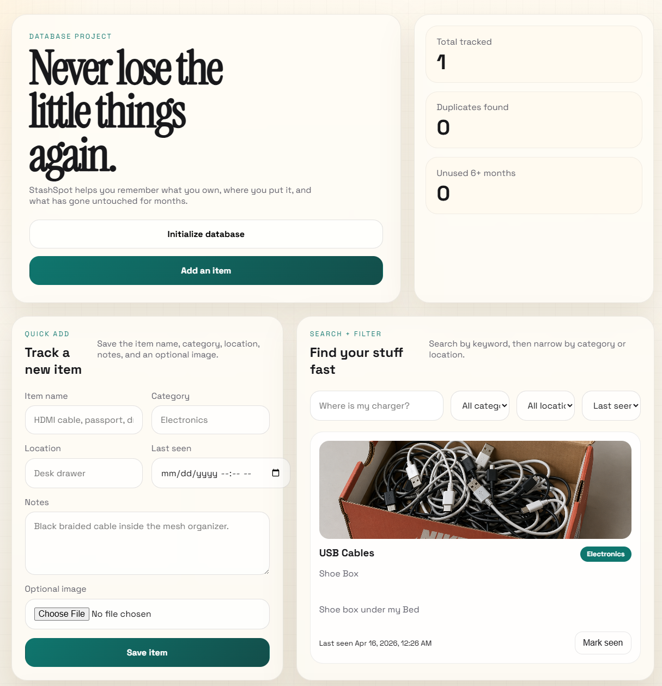

Featured Project
StashSpot
StashSpot is a personal inventory app that helps users track where everyday items are stored, when they were last seen, and what has gone unused over time.
The app combines structured item entry, optional photo uploads, and fast search/filtering so you can quickly find things like cables, documents, and devices without digging through boxes or drawers.
SQL
Database Design
CRUD Workflows
Search + Filter